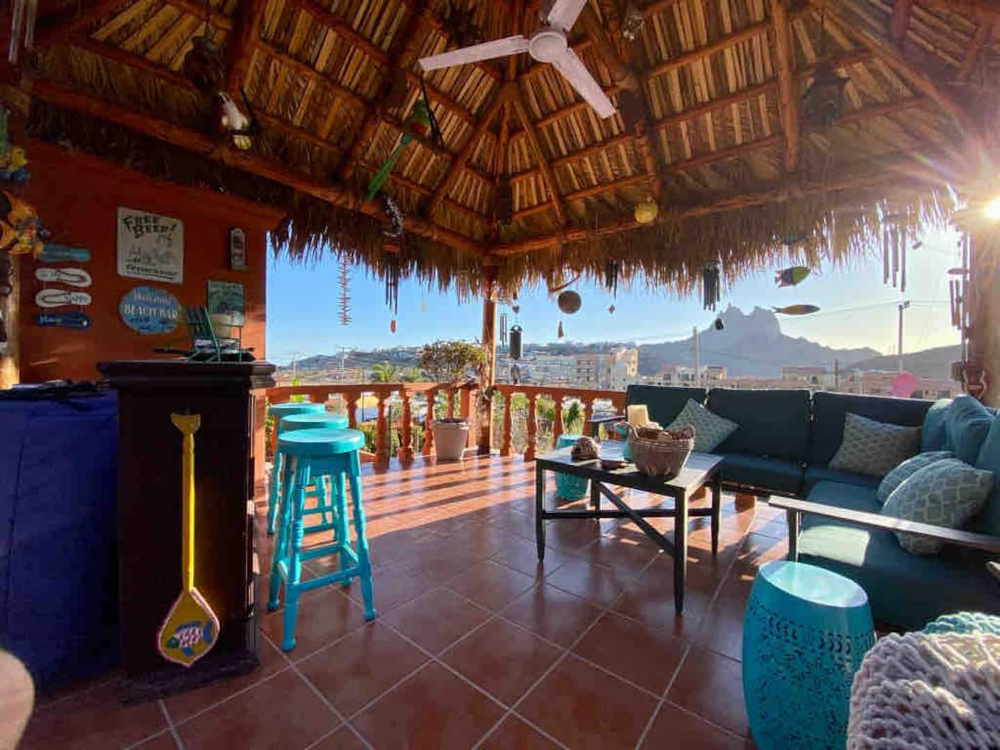

Top-Rated Stays by Category



Discover the perfect beachfront accommodation for your Sea of Cortez getaway
Looking for hotels in San Carlos Sonora? While there are a few traditional hotels, many travelers prefer vacation rentals with stunning ocean views, private pools, and easy access to pristine beaches. Whether you're seeking a romantic getaway, family adventure, or budget-friendly option, San Carlos offers accommodations to suit every traveler's needs.
Located on Sonora's breathtaking coastline along the Sea of Cortez, San Carlos combines natural beauty with modern comfort. From beachfront villas to cozy condos near the marina, you'll find the perfect home base for exploring Jacques Cousteau's "Aquarium of the World."
Our Recommendation: Most visitors to San Carlos choose vacation rentals for the authentic coastal living experience, privacy, and incredible value — especially for stays of 3+ nights or groups of 4+ people.
Most hotels and vacation rentals near Playa Los Algodones offer incredible sunsets and quick access to waterfront restaurants. This is San Carlos' most popular beach area, perfect for swimming, kayaking, and watching dolphins play in the bay. Walking distance to shops, cafes, and the marina.
Stay near the marina for easy access to fishing charters, diving excursions, and yacht tours. This area features modern condos with boat slips, waterfront dining, and stunning views of the Sea of Cortez. Ideal for water sports enthusiasts and fishing aficionados.
Properties near the iconic Tetakawi Peak offer dramatic desert-meets-ocean views and hiking trail access. These rentals provide a quieter, more secluded experience while still being just minutes from beaches and town. Perfect for nature lovers and photographers.
Upscale vacation rentals and villas line this exclusive bay area, featuring private beaches, infinity pools, and luxury amenities. Known for calm waters perfect for paddleboarding and snorkeling. A premium choice for those seeking privacy and elegance.
Browse our curated selection of hotels, vacation rentals, and beachfront properties. From budget-friendly condos to luxury oceanfront villas, find the ideal accommodation for your Sea of Cortez adventure.
Explore Accommodations